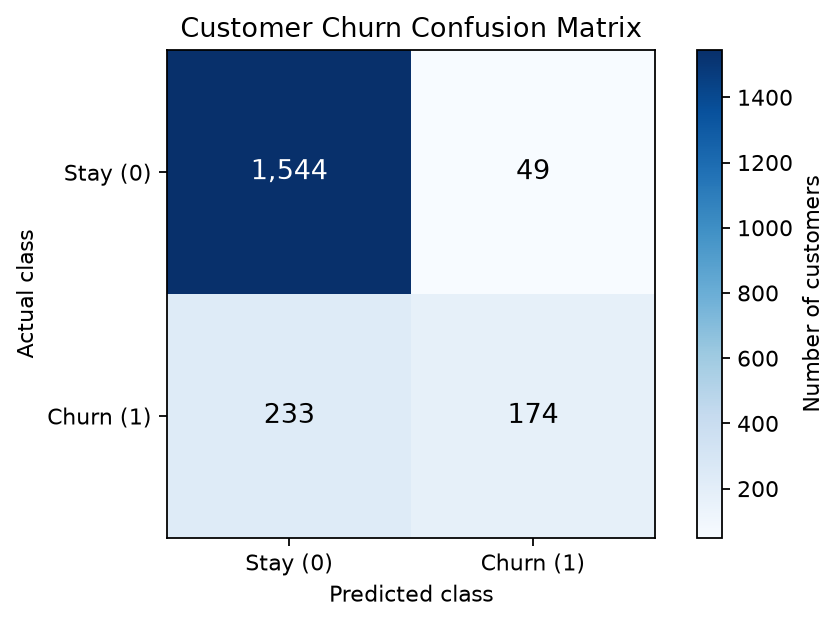
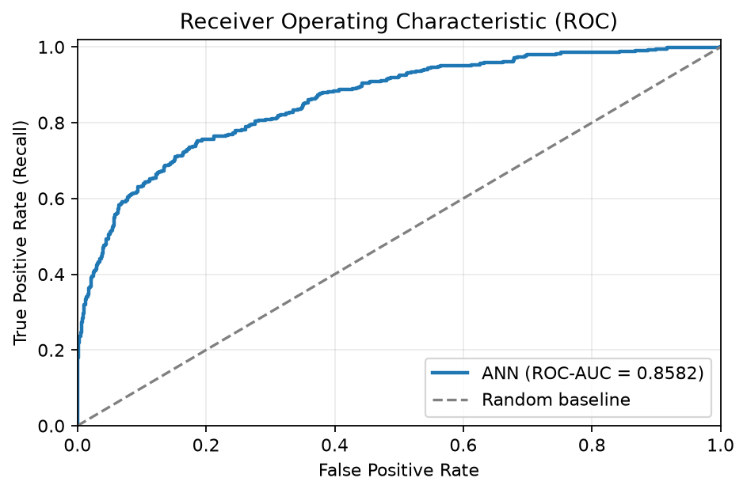
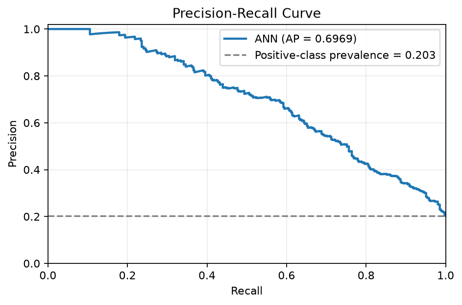
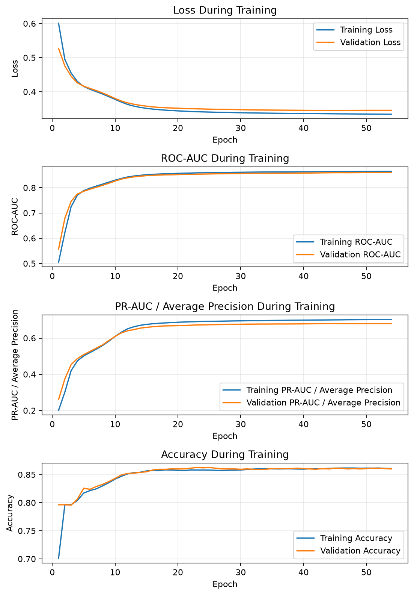

Generated: 2026-10-29T13:10:44.212719-04:00
The model was evaluated on 2,000 held-out test observations. Accuracy was 85.90%, ROC-AUC was 0.8582, precision was 78.03%, and recall was 42.75% at a classification threshold of 0.50.
The ROC-AUC indicates strong ranking discrimination on this test set. Recall is relatively low at the selected threshold. Review threshold tuning on validation data if identifying more churners is a business priority.
These results describe performance on this test set; they do not by themselves establish statistical significance or business impact.
| Metric | Result |
|---|---|
| Accuracy | 0.8590 (85.90%) |
| Precision | 0.7803 (78.03%) |
| Recall / Sensitivity | 0.4275 (42.75%) |
| F1 score | 0.5524 |
| ROC-AUC | 0.8582 |
| Average precision (PR-AUC field) | 0.6969 |
| Specificity | 0.9692 (96.92%) |
| Classification threshold | 0.50 |
Average precision is calculated with scikit-learn's average_precision_score; it is not the trapezoidal integral of the precision-recall curve.
| Actual class | Predicted stay (0) | Predicted churn (1) | Total |
|---|---|---|---|
| Stay (0) | 1,544 | 49 | 1,593 |
| Churn (1) | 233 | 174 | 407 |
| Total | 1,777 | 223 | 2,000 |
At this threshold, the model identified 174 of 407 actual churners and missed 233. It flagged 223 customers as potential churners.




Review the curves for divergence between training and validation performance. Early stopping alone does not prove that overfitting has been eliminated.
metrics.jsonThis report was generated automatically from the current run's test labels, predicted probabilities, evaluation metrics, and training history.